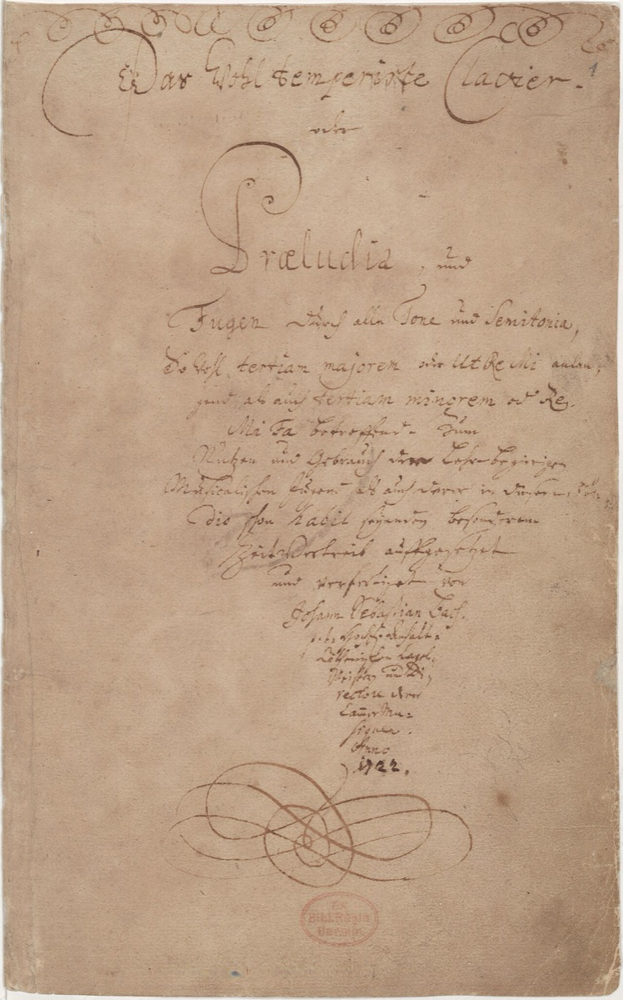

The earliest Bach manuscripts: copying Reincken 'at Master Böhm's'

For three centuries, Bach's relationship to Georg Böhm was a matter of ear rather than evidence. Böhm — organist of the Johanniskirche in Lüneburg's town center, a Thuringian countryman of the Bachs, and the reigning master of the chorale partita — was audibly present in the young Bach's music; the style influence was so plain that biographers simply asserted the connection and moved on. But no document joined the two names. The Obituary, oddly, says nothing of a formal association, and the silence left one of the most important apprenticeships in music history standing on inference alone: plausible, persuasive, and unproven.
Then, in 2006, scholars at the Bach-Archiv looked hard at two organ tablatures — now known as the "Weimar tablatures" — and recognized the handwriting. Tablature was the old German keyboard shorthand, a notation that writes music as letters rather than notes on staves, and these two manuscripts were copies of monumental chorale fantasias by Reincken and Buxtehude, the twin summits of the north-German organ school. The hand was the unmistakable youthful hand of Johann Sebastian Bach. And one copy carried an inscription that settled everything the Obituary had left unsaid: à Dom. Georg: Böhme — at the house of Master Georg Böhm — with the date 1700.
They are the earliest surviving objects from Bach's hand, and it is hard to overstate what they did to the Lüneburg picture. A relationship that had been plausible became physical. The fifteen-year-old scholarship boy was not merely a schoolboy who admired the famous organist across town; he had access to Böhm's personal library and workroom, and he was spending his hours there copying the summit repertoire of the northern school — Reincken's An Wasserflüssen Babylon alone runs to hundreds of bars — and doing it in the tradition's own professional shorthand, fluently. Whether Böhm gave formal lessons, the paper does not say; what it says is that the boy was working inside the master's orbit, at the master's own shelves, on the hardest music the tradition had produced. For a composer whose education was copying, no document could be more intimate. It is the act of learning itself, caught on paper and dated.
And the inscription creates one of the longest and most satisfying arcs this timeline can draw. The chorale the boy copied at Böhm's house in 1700 — An Wasserflüssen Babylon, "By the waters of Babylon" — is the very chorale on which, in Hamburg twenty years later, the mature Bach improvised for half an hour in the presence of old Reincken himself, drawing from the last patriarch of the northern school the benediction that closes an era: "I thought this art was dead, but I see that it lives on in you." Reincken almost certainly never knew that the visitor astonishing him had been studying his scores, in manuscript, since the age of fifteen. He heard a stranger's homage; it was in fact a pupil's. We know this, and he could not — and we have only known it ourselves since 2006.
That last clause is worth sitting with, because it is the card's second lesson. Bach scholarship still moves. The earliest documents in the hand of a composer born in 1685 were identified within living memory, and the identification quietly rewrote a chapter of his biography. It is precisely why every card in this timeline carries its sources: the dates and attributions here rest on research that is ongoing, and what is inference today may be paper tomorrow — or may be corrected. Pedagogically, the tablatures perform one more service. The famous moonlight story from Ohrdruf — the boy copying a forbidden manuscript by night — comes to us as family legend, unverifiable and probably improved in the telling. The Böhm tablatures are that story made checkable: the same method, the same hunger, the same boy — but real paper, a real inscription, and a real date. Legend and document tell one story here, and for once the document is the better one.
Continue with the era essay: Lüneburg: the northern education, or follow the chorale to its resolution: Hamburg, 1720.
The 'Weimar tablatures' (organ tablatures in Bach's youthful hand, identified 2006; Bach Digital)
Wolff, The Learned Musician, ch. 3
→ full bibliography & links